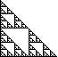
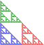
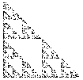

Generating fractals by iterating a collection of transformations is the Iterated Function System (IFS) method, popularized by Barnsley, based on theoretical work by Hutchinson and Dekking. We use a simple example to see how it works.
|  | To illustrate the IFS method, we show how a specific set of IFS rules generates a Sierpinski gasket. |
|  | The gasket rules leave the gasket unchanged. The gasket is the only shape (of finite extent) left unchanged by these rules. |
| Now we consider the general setting for IFS. | |
|  | Finally, here is a more more mathematical approach to IFS. |